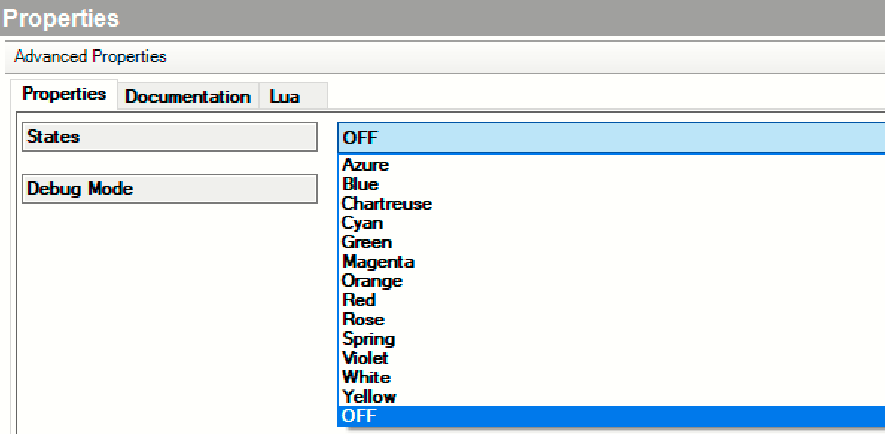
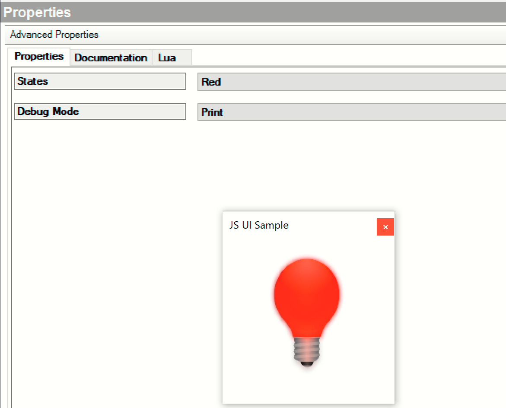
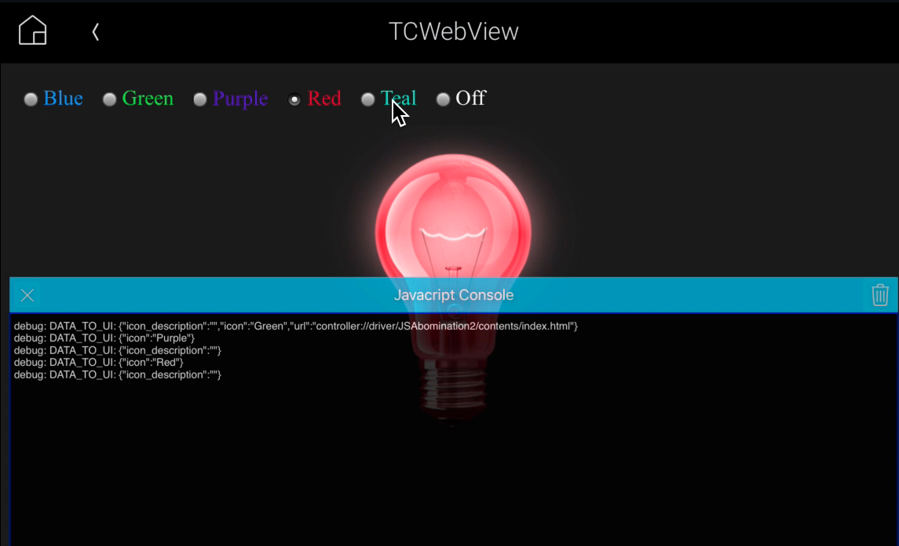

License, Copyright, and Trademark
The content contained in this repository is the intellectual property of Snap One, LLC, (formerly known as Wirepath Home Systems, LLC), and use without a valid license from Snap One is strictly prohibited. The user of this repository shall keep all content contained herein confidential and shall protect this content in whole or in part from disclosure to any and all third parties except as specifically authorized in writing by Snap One.
License and Intellectual Property Disclaimer
The content in this repository is provided in connection with Snap One products. No license, express or implied, by estoppal or otherwise, to any intellectual property rights is granted by this document or in this repository. Except as provided in Snap Oneʼs terms and conditions for the license of such products, Snap One and its affiliates assume no liability whatsoever and disclaim any express or implied warranty, relating to the sale and/or use of Snap One products including liability or warranties relating to fitness for a particular purpose, merchantability, or infringement of any patent, copyright or other intellectual property right. Snap One products are not intended for use in medical, lifesaving, or life sustaining applications.
Information regarding third-party products is provided solely for educational purposes. Snap One is not responsible for the performance or support of third-party products and does not make any representations or warranties whatsoever regarding the quality, reliability, functionality or compatibility of these products. The reader is advised that third parties can have intellectual property rights that can be relevant to this repository and the technologies discussed herein, and is advised to seek the advice of competent legal counsel regarding the intellectual property rights of third parties, without obligation of Snap One.
Snap One retains the right make changes to this repository or related product specifications and descriptions in this repository, at any time, without notice. Snap One makes no warranty for the use of this repository and assumes no responsibility for any errors that can appear in the repository nor does it make a commitment to update the content contained herein.
Copyright
Copyright 2024 Snap One, LLC. All rights reserved.
The above copyright notice applies to all content in this repository unless otherwise stated explicitly herein that a third-party’s copyright applies.
No part of this publication may be reproduced, photocopied, stored on a retrieval system, or transmitted without the express written consent of the publisher.
Trademarks
Snap One and Snap One Logo, Control4 and the Control4 logo, and DriverWorks are trademarks or registered trademarks of Snap One, LLC. Other product and company names mentioned in this repository may be the trademarks or registered trademarks of their respective owners.
Derivative Works
To the extent that you create any “Derivative Work” (meaning any work that is based upon one or more preexisting versions of the work provided to you in this repository, such as an enhancement or modification, revision, translation, abridgement, condensation, expansion, collection, compilation or any other form in which such preexisting works may be recast, modified, transformed or adapted, explicitly including without limitation, any updates or changes to Snap One, LLC’s software code or intellectual property) such Derivative Work shall be owned by Snap One, LLC and all right, title and interest in and to each such Derivative Work shall automatically vest in Snap One, LLC. To the extent any Derivative Work does not automatically vest in Snap One, LLC by operation of law, you hereby assign such Derivative Work to Snap One, LLC with full title guarantee. Snap One, LLC shall have no obligation to grant you any right in any such Derivative Work.
Contact Us
Snap One, LLC 11734 S. Election Road Salt Lake City, UT 84020 USA
Introduction
This documentation includes content that details the functions that make up the UI Button Proxy which is supported in the DriverWorks Software Development Kit.
Proxies (Commands)
A proxy driver is an interface to the Control4 system for a set of devices that share common functionality. For instance, most DVD disc changers have common controls such as PLAY, STOP, PAUSE and FAST FORWARD. The disc changer proxy allows for a common user interface to control all disc changers. The Control4 system (Director) sends information to and receives information from the proxy drivers. The proxy drivers send information to and receives information from the protocol drivers. Remember, your DriverWorks driver interacts with the proxy driver which then interacts with the system. As a driver developer you will be relying on this proxy to provide status (notification) to the Control4 system for the device you are controlling. You will also receive commands from the system that you will act on to control the device. These commands and notifications are at the heart of what you will be implementing in your driver. Essentially your driver is becoming the go-between from the Control4 system and your device with the proxy driver giving structure to the commands and notifications which you will be implementing. Your driver can facilitate communications with multiple types of proxies for a single device. As an example, a Security System driver will utilize both the Security proxy and the Contacts proxy. These additional proxies are configured in the <connections> section of the .c4z.
Protocol (Notifications)
Two similar devices may have the same functionality but utilize a very different command set. A protocol driver provides the device-specific information needed to communicate with the Control4 system. In the case of DriverWorks, the DriverWorks driver is the protocol driver. When combined with the device-specific.c4Z file it provides the custom code necessary to implement the 2-way device driver. In the case of DriverWorks, the DriverWorks driver is the protocol driver. When combined with the device-specific.c4Z file it provides the custom code necessary to implement the 2-way device driver.
What’s New
What’s New in 3.4.2
There were no modifications to the UI Button Proxy in conjunction with O.S. Release 3.4.2.
What’s New in 3.4.1
There were no modifications to the UI Button Proxy in conjunction with O.S. Release 3.4.1.
What’s New in 3.4.0
There were no modifications to the UI Button Proxy in conjunction with O.S. Release 3.4.0.
What’s New in 3.3.2
There were no modifications to the UI Button Proxy in conjunction with O.S. Release 3.3.2.
What’s New in 3.3.1
There were no modifications to the UI Button Proxy in conjunction with O.S. Release 3.3.1.
What’s New in 3.3.0
There were no modifications to the UI Button Proxy in conjunction with O.S. Release 3.3.0.
What’s New in 3.2.3
There were no modifications to the UI Button Proxy in conjunction with O.S. Release 3.2.3.
What’s New in 3.2.2
There were no modifications to the UI Button Proxy in conjunction with O.S. Release 3.2.2.
What’s New in 3.2.1
There were no modifications to the UI Button Proxy in conjunction with O.S. Release 3.2.1.
What’s New in 3.2.0
There were no modifications to the UI Button Proxy in conjunction with O.S. Release 3.2.0.
What was New in 3.1.2
There were no modifications to the UI Button Proxy in conjunction with O.S. Release 3.1.2.
What was New in 3.1.0
There were no modifications to the UI Button Proxy in conjunction with O.S. Release 3.1.0.
What was New in O.S.3
There were no modifications to the UI Button Proxy in conjunction with O.S. Release 3.0.0.
UI Button Proxy Overview
The UI Button Proxy was delivered in OS 2.9.0. The proxy supports the display of a configurable button within Navigator. The button and can be placed onto any experience menu such as Listen, Watch, Security, Comfort. Navigator menu configuration for shortcuts supported by the button is done through ComposerPro's standard room menu controls.The button's icon can also change to reflect the state of the device that the button controls.
The XML name of the proxy is "UI Button". For example:
<proxies>
<proxy proxybindingid="5001" name="UI Button">uibutton</proxy>
</proxies>
To the right is an example of the connection information required to use the UI Button Proxy:
<connections>
<connection>
<id>5001</id>
<facing>6</facing>
<connectionname>UIBUTTON</connectionname>
<type>2</type>
<consumer>False</consumer>
<audiosource>False</audiosource>
<videosource>False</videosource>
<linelevel>False</linelevel>
<classes>
<class>
<classname>UIBUTTON</classname>
</class>
</classes>
</connection>
</connections>
Note that OS Release 2.10.0 enhanced this Proxy with the capability to allow for URL manipulation of Navigator's web module feature through the use of the HTML Web View.
HTML WebView Overview
Adding the HTML WebView functionality to an Experience (UIbutton) driver enables the driver developer to specify a web URL that can provide an HTML interface for the end user. The web UI is launched within an embedded browser on the Control4 T3 touch screen.
HTML WebView Usage Best Practice Recommendations
The Driver Developer should implement the proxy interfaces that Control4 provides as a standard part of the user experience to the full extent that these apply to the device. The web interface should be considered supplementary to the proxy interface.
The Driver Developer should keep the Web UI as simple as reasonably possible.
HTML WebView Usage Guidelines (rules):
The developer must self-certify their website on our current browsers (on the T3, T4s and Mobile devices). If they find any incompatibility between their HTML UI / website, and our embedded browser, they must code around it.
They must provide all support for their web UI.
The Experience driver can do no more than reference the external website, all log ins must occur at the web site, not within the driver.
There is no Control4 certification for an Experience driver that uses the HTML WebView capability.
Because these drivers are not certified, we reserve the right to post them or not to post them within the Control4 online database based on discretion.
If a call comes to our support, we MAY instruct the dealer to remove the driver, otherwise any support will be referred to the developer of the driver.
JavaScript API
The Proxy has also been enhanced to provide a JavaScript API that allows Driver hosted web views to send commands, subscribe to DATA_TO_UIs and variables using the existing mobile communication channels.
In addition to the APIs, a new capability has been added: mobile_webview_enabled
This functionality is available for all customers running mobile app version 321.46 (or later) and running OS 3.1.3 (or later).
A sample Driver: JavascriptAPIDemo.c4z is also available. To use the demo driver:
- Download the Javascript API driver from the JS demo Driver folder from the DiverWorks Github repository and add it to your project.
- Under the Project’s System Design, select the room where the driver was added.
- Under the Room’s Properties select Navigator.
- Note the that the demo driver (UI Button) is listed under the Device column in the following Experience Menus: Comfort, Listen, Security and Watch.
- Ensure that UI Button has a Visibility status of Visible in each of the Experience menus. The status can be changed by clicking on the Modify … button on the Properties screen.
- Refresh Navigators.
Demo Driver Usage
The driver utilizes a lightbulb and color variables to demonstrate the use of the web_view_url capability and new APIs. Selecting the UI Button driver from System Design will display the Advanced properties for the driver. The driver supports the selection of several states for the bulb.

Select a state, Red for example, and click the set Button. Verify the color state is red on Touchscreens in the room where the UI Button resides and mobile devices running this project. The color state can also be verified by double clicking the UI Button driver from System design.

The driver’s Lua output will from the Red State setting is displayed to the right.
OnPropertyChange(): States Red
OnPropertyChange(): States
Icon changed to: Red
Red
fireEvent(): Red
Next, from a mobile device, change the color of the bulb state to Blue. Verify the state change on Touchsrceens and double clicking the UI Button driver from System design.
The driver’s Lua output from changing from red State to Blue is displayed to the right.
OnPropertyChange(): States Red
OnPropertyChange(): States
Icon changed to: Red
Red
fireEvent(): Red
OnPropertyChange(): States Blue
Icon changed to: Blue
OnPropertyChange(): States
Blue
fireEvent(): Blue
WebView Mobile Usage Best Practice Recommendations
Webview Mobile App Usage Guidelines (rules):
When accessing a controller remotely through the App, a fully qualified URL should be used to ensure all UI resources will render correctly on the App. The mobile App cannot access local-style resources specified by the CSS. However, if the CSS is structured to include the fully qualified path including the controller syntax, the resource will be available both locally and remotely.
For example, here is a path that would successfully render a background image locally:
{ background-image: url(../images/wp_carbon_blue.jpg); padding: 16px; }
However, this path will fail to render the image on the mobile App. An example of a fully qualified URL to the background image would be:
{ background-image: url(controller://driver/JavascriptAPIDemo/contents/images/wp_carbon_blue.jpg); padding: 16px; }
Implementation
See the web_view_url capability
Supported HTML/CSS Components
The following HTML/CSS components and versions are shipped with the T3 and T4 touchscreens:
T4: (OS 3.2.1 or above)
- Mozilla 5.0
- Android 9 Mobile rv:96.0
- Gecko/96.0
- Firefox/96.0
T3: (OS 3.1.3 or above)
- Mozilla 5.0
- Android 4.4.2 Mobile rv: 96.0
- Gecko 96.0
- Firefox 96.0
T3: (OS 3.1.2 or below)
- Mozilla 5.0
- Linux for Android 4.4.2 rk3188 Build KOT49H
- AppleWebKit 537.36
- KHTML, like Gecko Version 4.0
- Chrome 30.0.0.0
- Safari 537.36
UI Button Capabilities
<navigator_display_options></navigator_display_options>
This capability adds the ability to display device state icons for the button. As of this release, icon resolution for non-Media Server Proxy based drivers is:
- 300x300px
- 90x90px
- 70x70px
Example
<capabilities>
<navigator_display_option proxybindingid="5001">
<display_icons>
<!-- Default Icon -->
<Icon width="300" height="300">controller://driver/shortcutTest/icons/msp_ico_settings/msp_ico_settings_300.png</Icon>
<!-- On State -->
<state id="Settings-on">
<Icon width="300" height="300">controller://driver/shortcutTest/icons/msp_ico_settings_a/msp_ico_settings_a_300.png</Icon>
</state>
<!-- Off State -->
<state id="Settings-off">
<Icon width="300" height="300">controller://driver/shortcutTest/icons/msp_ico_settings/msp_ico_settings_a_300.png</Icon>
</state>
</display_icons>
</navigator_display_option>
</capabilities>
Note, the example to the right does not include all icon sizes for brevity.
<web_view_url></web_view_url>
Optional Capability which, when added contains the default URL that is associated with the shortcut.
Example
<capabilities>
<web_view_url proxybindingid="5000">http://youtube.com</web_view_url>
</capabilities>
web_view_url
<web_view_url></web_view_url>
An optional capability which points to the c4z-delivered web application. The controller://driver/driver_name construct (i.e., the Controller URL Scheme) connects at the driver's www directory as the root of the path.
Note that the driver name MUST be the same as the driver's filename.
Example
<capabilities>
<web_view_url proxybindingid="5001">controller://driver/JavascriptAPIDemo/contents/index.html</web_view_url>
</capabilities>
mobile_web_view_enabled
<mobile_web_view_enabled></mobile_web_view_enabled>
An optional boolean capability that indicates that the driver can be shown in mobile clients when the web_view_url capability is also present. Applicable to O.S. 3.0.0 and later.
UI Button Proxy Events
The UI Button Proxy currently supports one Event:
Selected - Fired upon receiving the Select command.
UI Button Proxy Notifications
ICON_CHANGED
Notification sent to the proxy to change the driver's icon.
Signature
ICON_CHANGED
| Parameter | Description |
|---|---|
| icon | str: value which references an icon state name defined in the display icons capability or an empty string to set the default icon. |
| icon_description | str: Value of a human readable string describing the icon state. This is used in the List Navigator in place of the icon. |
Returns
None
DataToUI
Sends “icon” DataToUI: <icon>Settings-on</icon>
Also sends “icon_description” DataToUI: <icon_description>Settings are on</icon_description>
Example
C4:SendToProxy(5001, "ICON_CHANGED", {icon="Settings-on", icon_description="Settings are on"})
URL_CHANGED
Notification that supports the ability for the driver to dynamically change the web URL. This is useful in cases such as changing ports, load balancing and driver-delivered controller hosted UI content. This function is sent to the proxy when the URL changes. Note that if the parameter value is empty, then the URL is considered disabled and the web view will not be shown in navigator. Also, note, Navigator will not change the URL of an open web view.
Signature
URL_CHANGED
| Parameter | Description |
|---|---|
| url | str: Value of the URL |
Returns
None
DataToUI
Sends “url” DataToUI: <url>http://google.com</url>
Example
C4:SendToProxy(5001, "URL_CHANGED", {url="http://control4.com"})
Usage Note
See the HTML Webview Overview content for more information.
UI Button Proxy Commands
SELECT
This command comes from the UI when a user selects the shortcut for the button. It is passed to the protocol driver and also sends the Selected event.
Signature
SELECT
| Parameter | Type | Description |
|---|---|---|
| Device ID | NUM | The room device ID value where the shortcut was pressed in. Exposed by the LAST_ROOM_SELECTED variable. |
| Menu | STR | The name of the menu the shortcut was selected in. Possible values: "listen", "watch", "security", "comfort", "service". Exposed by the LAST_MENU_SELECTED variable. |
UI Button Proxy Variables
LAST_MENU_SELECTED
String value of the name of the menu where the menu was selected. Possible values are: "listen", "watch", "security", "comfort", "service".
LAST_ROOM_SELECTED
Number value of the room id of the last room invoked by the Select command on the shortcut.
UI Button Proxy Webview JavaScript API
API OVERVIEW
Requires Navigator Version 321.46+
The Java Script API included with the UI Button proxy allows Driver hosted web views to send commands, subscribe to DATA_TO_UIs and variables using the existing mobile communication channels. This enables UI Button web views to work remotely. Previous versions of web views only worked on Control4 touchscreens residing on the local network.
Note that these API calls can only be made to the driver/protocol hosting the web page. UI Buttons pointing to external web pages will not be able to access the Javascript API.
C4.sendCommand
Sends a command to either the protocol or driver. All responses are sent back via the Javascript callback: onDataToUi(response: string). Driver writers will need to implement this callback in their web page. Errors are sent back via: onSendCommandError(message: string)
Signature
C4.sendCommand(commandName: string, params: string, async: boolean, sendToProtocol: boolean = false): void)
| Parameter | Description |
|---|---|
| string | commandName - The name of the command to be executed by the driver or protocol. |
| string | params - A JSON formatted string of parameters. Invalid JSON will trigger an exception. |
| boolean | async - true to send the command asynchronously to ExecuteCommand(). false to send the command as a UI Request. |
| boolean | sendToProtocol - Whether the command should be sent to the protocol or driver. |
| Returns | Description |
|---|---|
| void | All responses, even for synchronous commands, will be sent back via the Javascript callback: onDataToUi(response: string) |
| Callbacks | Description |
|---|---|
onDataToUi(response: string) |
Callback to receive DATA_TO_UIs when subscribed. |
onSubscribeToDataToUiError(message: string) |
Callback to receive error messages when attempting to subscribe to DATA_TO_UIs. |
Example
C4.sendCommand("SetState", "{'state':'" + color + "'}", false, true);
C4.subscribeToDataToUi
Subscribes to the DATA_TO_UIs for either the protocol or proxy. All responses are sent back via the Javascript callback: onDataToUi(response: string). Driver writers will need to implement this callback in their web page to receive DATA_TO_UIs. Errors are sent back via: onSubscribeToDataToUiError(message: string)
Signature
C4.subscribeToDataToUi(sendToProtocol: boolean = false):void
| Parameter | Description |
|---|---|
| boolean | sendToProtocol - Whether the command should be sent to the protocol (true) or proxy (false). |
| Returns | Description |
|---|---|
| void | All responses will be sent back via the Javascript callback: onDataToUi(response: string) |
| Callbacks | Description |
|---|---|
onDataToUi(response: string) |
Receives DATA_TO_UIs when subscribed. DATA_TO_UIs are converted to json by Broker before being sent to the web page. |
onSubscribeToDataToUiError(message: string) |
Receives error messages when attempting to subscribe to DATA_TO_UIs. |
Example
Subscribes to the protocol's DataToUI events. Protocol driver's can send DataToUI
events by calling C4:SendDataToUI(xml) or C4:SendDataToUI (strCommand, tParams)
C4.subscribeToDataToUi(true);
C4.subscribeToVariable
Subscribes to the specified variable for either the protocol or proxy. All responses are sent back via the Javascript callback: onVariable(response: string). Driver writers will need to implement this callback in their web page to receive variable change events. Errors are sent back via: onSubscribeToVariableError(message: string)
Signature
C4.subscribeToVariable("LAST_MENU_SELECTED", false);
| Parameter | Description |
|---|---|
| string | variableName - The name of the variable to subscribe to for either the driver or protocol. |
| boolean | protocol - Whether the variable is part of the protocol (true) or proxy (false). |
| Returns | Description |
|---|---|
| void | All responses will be sent back via the Javascript callback: onDataToUi(response: string) |
| Callbacks | Description |
|---|---|
onVariable(response: string) |
Receives DATA_TO_UIs when subscribed. |
onSubscribeToVariableError(variableName: string, message: string) |
Receives error messages when attempting to subscribe to a variable. |
Example
Subscribes to the proxy's "LAST_MENU_SELECTED" variable.
C4.subscribeToVariable("LAST_MENU_SELECTED", false);
UI Button Proxy JavaScript Logging
Managing JS Logging using console.log
A debug console is included in the webview page to assist with viewing javascript logs. It is invoked by tapping 4 times on the header. The console appears in the lower half of the view and can be positioned as needed. Any JS console logging is shown in the console view.
